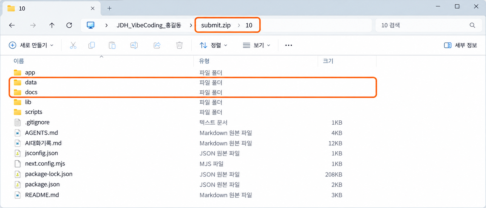

사용자 흐름 테스트와
제출 ZIP 연습用户流程测试与
提交 ZIP 练习
제출 ZIP을 한 번 만들어 안을 열어 봅니다. 올리지는 않습니다.把写好的场景从头运行到尾，定好要改的顺序，
再试着做一次提交 ZIP，打开看看里面。不上传。
시험하는 동안에는 고치지 않는다测试期间不修改
12-1에서 다섯 시나리오의 예상을 적었습니다. 이제 실행합니다. 그런데 시험하다 보면 손이 먼저 나갑니다. 두 번째 단계에서 버튼 글씨가 마음에 안 들어 고치고, 세 번째 단계에서 배치를 고치다 보면 어느새 기록이 사라집니다. 그때는 무엇 때문에 사라졌는지 알 수 없습니다.12-1 写好了五个场景的预想。现在开始运行。可是测着测着，手就先动了：第二步嫌按钮上的字不好看就改，第三步又去改布局，不知不觉记录就不见了。到那时，已经不知道是什么原因让它消失的。
먼저 끝까지 실행하고 적는다. 고치는 것은 그다음, 한 번에 하나만.先运行到底、写下来。修改放在后面，而且一次只改一处。
시험하는 동안에는 고치지 않는다测试期间不修改 (이어서)（续）
오늘은 아래 순서로 갑니다. 앞의 절반은 시나리오를 실행해 docs/12_test_record.md를 채우는 시간이고, 뒤의 절반은 그 기록을 근거로 판단하는 시간입니다. 마지막에 만드는 제출 ZIP은 13회에 낼 것과 같은 방법으로 만들되, 오늘은 어디에도 올리지 않고 안을 확인하기만 합니다.今天按下面的顺序走。前一半时间运行场景、填写 docs/12_test_record.md，后一半时间以这份记录为依据做判断。最后做的提交 ZIP，和第 13 次课要交的用同样的方法做，但今天哪里都不上传，只确认里面的内容。
| 순서顺序 | 하는 일做的事 | 채우는 곳填写的位置 |
|---|---|---|
| ①① | 네 시나리오를 실행한다运行四个场景 | 2 · 3 · 4항第 2 · 3 · 4 项 |
| ②② | 처음 예상과 달라진 단계를 찾는다找出第一次和预想不一样的步骤 | 5항第 5 项 |
| ③③ | 핵심을 막는 문제 하나만 AI와 고치고 다시 시험한다只和 AI 一起改一个挡住核心的问题，再测一次 | 9항第 9 项 |
| ④④ | 계획과 비교하고, 13회에 고칠 순서를 정한다和计划比较，定好第 13 次课要改的顺序 | 6 · 7항第 6 · 7 项 |
| ⑤⑤ | 제출 ZIP을 만들어 안을 확인한다做出提交 ZIP，确认里面的内容 | 8항第 8 项 |
2항의 시작 상태 · 사용자가 한 행동 · 예상한 서비스 반응 칸이 비어 있으면 실행하기 전에 먼저 채웁니다. 12-1 교과서의 2항 예시 표를 옆에 두고 씁니다. 예상 칸을 비운 채 실행하지 않습니다.如果第 2 项的起始状态 · 用户做的动作 · 预想的服务回应几格是空的，运行前先填好。把 12-1 教材里第 2 项的示例表放在旁边写。预想那格空着就不要运行。
서비스를 새로 켜고, 같은 출발선에 선다重启服务，站到同一条起跑线上 실습实践
시험은 매번 같은 출발선에서 시작해야 결과를 비교할 수 있습니다. 그래서 첫 시나리오에 들어가기 전에 서비스를 한 번 멈췄다가 다시 켜고, 브라우저도 새 탭으로 엽니다. 12-1에서 쓴 시작 상태와 지금 화면이 같은지도 확인합니다.每次都从同一条起跑线开始，测试结果才能比较。所以在进入第一个场景之前，先把服务停一次再重新启动，浏览器也用新标签页打开。还要确认 12-1 写的起始状态和现在的画面是否一样。
- VS Code에서
10폴더를 열고,npm run dev터미널을 눌러Ctrl+C로 멈춘다.在 VS Code 里打开10文件夹，点npm run dev的终端，按Ctrl+C停止。 - 같은 터미널에서
npm run dev를 다시 입력하고,Ready가 보이면 브라우저 새 탭에서http://localhost:3000을 연다.在同一个终端里再次输入npm run dev，看到Ready后，在浏览器新标签页打开http://localhost:3000。 docs/12_test_record.md를 열고Ctrl+Shift+V로 미리 보기를 옆에 띄운다. 표가 칸에 맞게 보이는지 본다.打开docs/12_test_record.md，按Ctrl+Shift+V在旁边打开预览。看看表格是不是整齐地显示在格子里。- SQLite Viewer로
data/app.db를 열어 지금 기록이 몇 줄인지 세어 둔다.用 SQLite Viewer 打开data/app.db，先数一数现在有几行记录。
이상한 곳을 발견해도 그 자리에서는 고치지 않고 실제 결과 칸에 적기만 합니다. 네 시나리오를 모두 마친 뒤 6~7절에서 무엇을 고칠지 정합니다.就算发现奇怪的地方，也不要当场修改，只写进实际结果那格。四个场景全部做完后，在第 6~7 节再决定改什么。
대표 정상 흐름을 단계마다 확인하며 끝까지 간다逐步确认，把代表性正常流程走到底 실습实践
가장 먼저 대표 정상 흐름을 실행합니다. 이번에는 결과만 보지 않고 3. 대표 정상 흐름 단계별 확인 표를 한 줄씩 짚으며 갑니다. 한 단계를 하고, 화면을 보고, 그 줄의 실제 결과와 판정을 적고 나서 다음 단계로 넘어갑니다. 내 서비스라 익숙해도 안내 문구를 건너뛰지 않습니다.首先运行代表性正常流程。这次不只看最终结果，而是对着 3. 대표 정상 흐름 단계별 확인（代表性正常流程分步确认）的表一行一行走。做完一步，看画面，写下那一行的实际结果和判定，再进入下一步。就算是自己的服务很熟悉，也不要跳过说明文字。
- 3항 1단계의 「사용자가 보는 것」이 화면에 있는지 본다.看第 3 项第 1 步“用户看到的”是否出现在画面上。
- 「사용자의 행동」에 적은 그대로 입력하고 누른다. 값도 적어 둔 것을 쓴다.照“用户的动作”里写的去输入、去点。值也用写好的那个。
- 화면에 보인 것을 그 줄의 「실제 결과」에 적고, 판정을 하나만 남긴다.把画面上出现的东西写进那一行的“实际结果”，判定只留一个。
- 마지막 단계까지 같은 방법으로 간다. 저장 단계에서는 SQLite Viewer도 다시 연다.用同样的方法走到最后一步。保存那一步要再打开一次 SQLite Viewer。
- 다 끝나면 2항의 대표 정상 흐름 줄에 전체 결과를 한 문장으로 적고 판정한다.全部做完后，在第 2 项代表性正常流程那行用一句话写下整体结果并判定。
어느 단계에서 다음으로 갈 수 없으면 그 줄을 실패로 적고, 아래 단계는 「앞 단계에서 멈춤」이라고 씁니다. 억지로 다른 방법을 찾아 넘어가면 사용자가 겪는 일과 달라집니다.如果在某一步没法往下走，就把那一行记成失败，下面几步写“在前一步停住”。硬找别的办法绕过去，就和用户的实际经历不一样了。
안내가 보이는 데서 끝나지 않는다看到提示还不算完 실습实践
다음은 예외 뒤 다시 시도입니다. 9회에 정한 잘못된 입력이나 상황을 일부러 만들고, 서비스가 무엇이 잘못됐는지 알려 주는지 봅니다. 그런데 이 시나리오의 진짜 목적은 그다음입니다. 안내를 따라 고친 뒤 정상 결과까지 다시 갈 수 있어야 통과입니다.接下来是例外后重试。故意制造第 9 次课定下的错误输入或情况，看服务会不会告诉你哪里错了。可这个场景真正的目的在后面：按提示改正后，要能再走到正常结果才算通过。
- 2항 예외 뒤 다시 시도 줄의 「사용자가 한 행동」대로 잘못된 입력을 한다.照第 2 项例外后重试那行“用户做的动作”去做错误输入。
- 안내가 보이는지, 이유와 고칠 방법이 있는지 본다.看有没有出现提示，有没有原因和改正方法。
- 안내대로 값을 고쳐 같은 버튼을 다시 누른다.照提示改好值，再按同一个按钮。
- 정상 결과가 나오는지 보고 실제 결과와 판정을 적는다.看是否出现正常结果，写下实际结果和判定。
| 이런 경우这些情况 | 사용자가 겪는 일用户经历的事 | 판정判定 |
|---|---|---|
| 안내가 아예 없다根本没有提示 | 무엇이 잘못됐는지 모른다不知道哪里错了 | 실패失败 |
| 안내는 있지만 이유가 없다有提示但没有原因 | 무엇을 고쳐야 할지 모른다不知道该改什么 | 실패失败 |
| 고쳐서 다시 눌렀는데 결과가 안 나온다改了再按，结果还是不出来 | 다시 시도할 수 없다没法重试 | 실패失败 |
| 잘못된 값이 그대로 저장되었다错误的值被原样保存了 | 목록에 이상한 기록이 남는다列表里留下奇怪的记录 | 실패失败 |
같은 행동을 두 번, 세 번 해 본다同一个动作做两次、三次 실습实践
한 번 되는 기능이 두 번째에도 되리라는 보장은 없습니다. 두 번째 기록이 첫 번째 기록을 덮어쓰거나, 같은 기록이 두 줄로 생기거나, 순서가 뒤섞이는 일이 자주 일어납니다. 2항의 같은 행동 반복 줄에 적은 대로 핵심 행동을 이어서 해 보고, 화면과 SQLite Viewer의 줄 수를 함께 셉니다.能成功一次的功能，不保证第二次也能成功。第二条记录覆盖掉第一条、同一条记录变成两行、顺序被打乱，这些事经常发生。照第 2 项重复同一动作那行写的，接连做几次核心动作，同时数一数画面和 SQLite Viewer 里的行数。
| 볼 것要看的 | 통과라면如果通过 |
|---|---|
| 화면의 기록 수画面上的记录数 | 한 번 할 때마다 하나씩 늘어난다每做一次就多一条 |
| 앞의 기록前面的记录 | 사라지거나 바뀌지 않는다不会消失，也不会被改掉 |
| 순서顺序 | 9회 계획에 정한 순서(최신이 위 등)를 지킨다遵守第 9 次课计划定的顺序（如最新的在上面） |
| SQLite Viewer의 줄 수SQLite Viewer 的行数 | 화면의 기록 수와 같다和画面上的记录数一样 |
숫자 범위나 글자 수 제한이 있는 서비스는 여기서 4. 선택 테스트의 세 줄을 시험합니다. 가장 작은 값, 가장 큰 값, 허용하지 않는 값 하나씩입니다. 해당하지 않으면 「해당 없음」이라고 적고 넘어갑니다.有数字范围或字数限制的服务，在这里测 4. 선택 테스트（选做测试）的三行：最小值、最大值、不允许的值各一个。不适用就写“不适用”，然后往下走。
새로고침하고, 서비스를 다시 켜고, 다시 연다刷新、重启服务、再打开 실습实践
마지막 시나리오는 기록이 정말 남는지 보는 시험입니다. 새로고침은 화면만 다시 받아 오고, 다시 방문은 서비스를 껐다 켠 뒤 새로 여는 것이라 둘을 차례로 합니다. 두 번 모두 기록이 그대로 보이고, SQLite Viewer의 줄과도 맞아야 통과입니다.最后一个场景是测记录是不是真的留得住。刷新只是重新取一次画面，再次访问是把服务关掉再打开后重新进入，所以两个要依次做。两次都能原样看到记录，而且和 SQLite Viewer 里的行对得上，才算通过。
- 지금 화면의 기록 수와 가장 최근 기록을 실제 결과 칸에 먼저 적어 둔다.先把现在画面上的记录数和最新那条记录写进实际结果格。
- 브라우저에서
F5를 누르고 같은 기록이 보이는지 본다.在浏览器里按F5，看是否还是同样的记录。 npm run dev터미널에서Ctrl+C로 멈추고,npm run dev로 다시 켠다.在npm run dev的终端里按Ctrl+C停止，再用npm run dev重新启动。- 브라우저 탭을 닫고, 새 탭에서
localhost:3000을 연다. 기록이 그대로인지 본다.关掉浏览器标签页，在新标签页打开localhost:3000。看记录是否还在。 - SQLite Viewer 탭을 닫았다가
data/app.db를 다시 열어 줄 수와 값을 화면과 맞춘다.关掉 SQLite Viewer 标签页，再重新打开data/app.db，把行数和值与画面对照。
화면에 보이고 표에도 있으면 통과입니다. 화면에 없는데 표에는 있으면 다시 불러오기가, 표에도 없으면 SQLite 저장이 처음 달라진 곳일 가능성이 큽니다. 이 구분은 다음 절에서 바로 씁니다.画面上有、表里也有，就是通过。画面上没有但表里有，第一次出偏差的地方很可能是重新调出；表里也没有，就很可能是 SQLite 保存。下一节马上会用到这个区分。
실패한 줄에서 처음 달라진 단계를 찾는다在失败的行里找出第一次出偏差的步骤 핵심核心
네 시나리오를 마쳤으면 실패나 확인 필요로 적은 줄을 봅니다. 그중 사용자가 핵심 결과에 가지 못하게 만든 줄 하나를 골라 5. 처음 달라진 단계를 채웁니다. 문제를 「안 돼요」로 뭉뚱그리지 않고, 어디까지는 예상대로였고 어디서부터 달라졌는지를 나누어 적는 것입니다.四个场景做完后，看记成失败或需确认的行。从中挑出让用户到不了核心结果的一行，填写 5. 처음 달라진 단계（第一次出现偏差的步骤）。不要把问题笼统地说成“不行”，而是分开写：到哪里为止和预想一样，从哪里开始不一样。
- 마지막으로 예상대로 작동한 단계: 3단계 — 「추가」를 누르면 목록 맨 위에 생긴다 - 처음 예상과 달라진 단계: 다시 방문 — 서비스를 다시 켜고 새 탭에서 열었다 - 사용자가 한 행동: Ctrl+C로 멈추고 npm run dev로 다시 켠 뒤 새 탭에서 열었다 - 화면에 실제로 보인 내용: 목록이 비어 있고 「아직 할 일이 없습니다」가 보였다 - 화면 · 요청 · API 처리 · 응답 · SQLite 저장 · 다시 불러오기 중 관련될 가능성이 있는 단계: 다시 불러오기 (SQLite Viewer에는 6줄이 있다)
- 마지막으로 예상대로 작동한 단계: 第 3 步 — 按“添加”后出现在列表最上面 - 처음 예상과 달라진 단계: 再次访问 — 重启服务后在新标签页打开 - 사용자가 한 행동: 按 Ctrl+C 停止，用 npm run dev 重新启动，再在新标签页打开 - 화면에 실제로 보인 내용: 列表是空的，显示“아직 할 일이 없습니다”（还没有待办事项） - 화면 · 요청 · API 처리 · 응답 · SQLite 저장 · 다시 불러오기 중 관련될 가능성이 있는 단계: 重新调出（SQLite Viewer 里有 6 行）
| 이런 증상이면如果是这种症状 | 관련될 가능성이 큰 단계很可能相关的步骤 |
|---|---|
| 입력칸 · 버튼 · 결과 자리가 보이지 않는다看不到输入框 · 按钮 · 结果的位置 | 화면画面 |
| 눌러도 아무 반응이 없거나 「연결하지 못했습니다」가 뜬다按了毫无反应，或出现“没能连接” | 요청 · API 처리请求 · API 处理 |
| 반응은 있는데 내용이 예상과 다르다有回应，但内容和预想不同 | 응답响应 |
| 화면에 보였는데 표에 줄이 없다画面上出现了，表里却没有那一行 | SQLite 저장SQLite 保存 |
| 표에는 줄이 있는데 다시 열면 화면에 없다表里有那一行，重新打开后画面上却没有 | 다시 불러오기重新调出 |
오늘 고치는 것은 핵심을 막는 문제 하나다今天只改一个挡住核心的问题 실습实践
오늘 고칠 수 있는 것은 사용자가 핵심 결과에 도달하지 못하게 하는 문제, 그중에서도 하나입니다. 버튼 글씨나 색처럼 결과에 영향이 없는 것은 7항에 적어 두고 13회로 넘깁니다. 고칠 때는 10회부터 해 온 것처럼 두 번에 나눠 요청합니다. 먼저 「아직 고치지 마」로 설명을 듣고, 내가 확인한 뒤에 「진행해」를 보냅니다.今天能改的，是让用户到不了核心结果的问题，而且只改其中一个。按钮上的字、颜色这类不影响结果的，先写进第 7 项，留到第 13 次课。修改时像第 10 次课以来那样分两次请求：先用“先别改”听它说明，我确认后再发“继续”。
아직 고치지 마. docs/09_development_plan.md와 docs/12_test_record.md의 5항을 읽어 줘. - 원래 약속: ___ - 내가 한 행동: ___ - 화면에 보인 것: ___ 전체를 다시 만들지 말고, 처음 달라진 한 단계만 찾아 줘. 그 단계를 고치는 가장 작은 수정 하나를 어느 파일의 무엇을 바꾸는지 쉬운 말로 먼저 설명해 줘. 수정한 뒤 같은 행동으로 다시 확인하는 방법도 알려 줘. docs 폴더의 문서는 고치지 마.
先别改。 请读 docs/09_development_plan.md 和 docs/12_test_record.md 的第 5 项。 - 原来的约定：___ - 我做的动作：___ - 画面上看到的：___ 不要整个重做，只找出第一次出偏差的那一个步骤。 请先用简单的话说明修好这一步的最小修改： 改哪个文件里的什么。 也告诉我修改后用同样的动作再确认的方法。 不要修改 docs 文件夹里的文件。
「원래 약속」에는 3항의 예상한 서비스 반응을, 「내가 한 행동」과 「화면에 보인 것」에는 5항의 같은 줄을 그대로 옮깁니다. 예: 원래 약속 — 서비스를 다시 켜도 목록에 할 일 6개가 그대로 보인다.“原来的约定”填第 3 项里预想的服务回应，“我做的动作”和“画面上看到的”照搬第 5 项里对应的行。例：原来的约定 — 重启服务后，列表里 6 条待办仍然在。
설명을 확인하고, 고치고, 같은 행동으로 다시 시험한다确认说明、修改，再用同样的动作测一次 (이어서)（续）
AI의 설명이 오면 바로 「진행해」를 보내지 말고 아래 세 가지를 먼저 봅니다. 셋 다 「예」일 때만 진행합니다. 고친 뒤에는 같은 시작 상태에서 같은 행동으로 다시 시험해야 합니다. 값이나 순서를 바꾸면 고쳐서 된 것인지 우연히 된 것인지 알 수 없기 때문입니다.AI 的说明来了，不要马上发“继续”，先看下面三点。三点都是“是”才继续。改完后，要从同样的起始状态、用同样的动作再测一次。如果换了值或顺序，就分不清是改好了，还是碰巧成功。
- 고치는 파일이 한두 개이고, 내가 말한 단계와 관계있는가?要改的文件只有一两个，而且和我说的步骤有关吗？
- 새 패키지 설치, 프로젝트 전체 다시 만들기,
docs문서 고치기가 없는가?没有安装新包、整个项目重做、修改docs文件这些吗？ - 다시 확인하는 방법이 내가 한 행동과 같은가?再次确认的方法和我做的动作一样吗？
진행해.
继续。
- 화면이 저절로 바뀌지 않으면
F5, 그래도 그대로면Ctrl+C후npm run dev.画面没自动变化就按F5；还是没变，就Ctrl+C后再npm run dev。 - 5항에 적은 시작 상태를 다시 만들고, 같은 행동을 같은 값으로 한다.重新做出第 5 项写的起始状态，用同样的值做同样的动作。
- 대표 정상 흐름을 처음부터 한 번 더 해 본다. 고치다가 다른 곳이 막히는 일이 흔하다.把代表性正常流程从头再走一遍。改一处、堵住另一处的事很常见。
- 다시 시험한 결과는 2항을 고치지 않고 9. AI 사용과 학생 판단의 「학생이 직접 다시 확인한 결과」에 적는다.再测的结果不要改到第 2 项，而是写进 9. AI 사용과 학생 판단（AI 使用与学生判断）的“학생이 직접 다시 확인한 결과”（学生亲自再次确认的结果）。
처음 계획과 지금 서비스를 나란히 놓는다把最初的计划和现在的服务放在一起 핵심核心
시험을 끝까지 해 보면 지금 서비스가 8회의 PRD, 9회의 사용자 흐름과 어디가 같고 어디가 달라졌는지 보입니다. 바뀐 것이 잘못은 아닙니다. 수업에서 만들 수 있게 줄였거나, 만들면서 더 나은 방법을 찾았을 수 있습니다. 6. 계획과 실제 결과 비교에는 바꾼 이유를 적고, 핵심 목적이 남아 있는지 스스로 답합니다.把测试做到底，就能看出现在的服务和第 8 次课的 PRD、第 9 次课的用户流程哪里一样、哪里变了。变了不是错。可能是为了课上做得出来而缩小了，也可能是做的过程中找到了更好的办法。在 6. 계획과 실제 결과 비교（计划与实际结果的比较）里写下改的理由，并自己回答核心目的是否还在。
| 6항의 줄第 6 项的行 | 이렇게 적는다 (예: 할 일 정리 서비스)这样写（例：待办整理服务） |
|---|---|
| PRD와 일치하는 부분PRD와 일치하는 부분（和 PRD 一致的部分） | 할 일을 추가하고 목록으로 다시 본다添加待办，再在列表里查看 |
| 9회 사용자 흐름과 일치하는 부분9회 사용자 흐름과 일치하는 부분（和第 9 次课用户流程一致的部分） | 1~4단계 순서가 같다第 1~4 步的顺序一样 |
| 줄이거나 바꾼 부분줄이거나 바꾼 부분（缩小或改变的部分） | 마감일 입력을 뺐다去掉了截止日期的输入 |
| 바꾼 이유바꾼 이유（改变的理由） | 날짜 입력에서 오류가 계속 나서, 할 일을 남기는 핵심을 먼저 지켰다日期输入一直出错，所以先守住记下待办这个核心 |
| 핵심 목적이 유지되는가?핵심 목적이 유지되는가?（核心目的保留了吗？） | 예 — 할 일을 남기고 다시 볼 수 있다是 — 能记下待办并再次查看 |
PRD.md를 고치지 않습니다不修改 PRD.md달라진 점은 12_test_record.md의 6항에만 적습니다. 8회에 낸 PRD는 그대로 두어야 처음 계획과 지금을 비교할 수 있습니다.变化只写在 12_test_record.md 第 6 项。第 8 次课交的 PRD 要保持原样，才能把最初的计划和现在作比较。
문제를 사용자가 받는 영향에 따라 나눈다按用户受到的影响给问题分类 핵심核心
오늘 찾은 문제를 7. 발견한 문제와 우선순위의 네 칸에 나누어 적습니다. 기준은 고치기 쉬운지가 아니라 사용자가 얼마나 막히는지입니다. 13회 수행평가에서는 이 칸의 위에서부터 고치므로, 지금 정한 순서가 다음 시간의 작업 순서가 됩니다.把今天找到的问题分别写进 7. 발견한 문제와 우선순위（发现的问题与优先顺序）的四栏。标准不是好不好改，而是用户卡得有多严重。第 13 次课的实践考核会从这几栏的上面开始改，所以现在定的顺序就是下一次课的工作顺序。
| 7항의 칸第 7 项的栏 | 이런 문제这类问题 |
|---|---|
| 사용자가 핵심 결과에 도달하지 못하게 하는 문제사용자가 핵심 결과에 도달하지 못하게 하는 문제（让用户到不了核心结果的问题） | 시작할 방법을 모른다 · 핵심 행동이 안 된다 · 결과가 안 나온다 · 기록이 사라진다 · 개인정보가 드러난다不知道怎么开始 · 核心动作做不了 · 不出结果 · 记录消失 · 个人信息暴露 |
| 사용자가 이해하거나 다시 시도하기 어렵게 하는 문제사용자가 이해하거나 다시 시도하기 어렵게 하는 문제（让用户难以理解或重试的问题） | 안내에 이유가 없다 · 예외 뒤 돌아가는 길이 헷갈린다 · 결과의 뜻을 모르겠다提示没有原因 · 例外后回去的路让人糊涂 · 看不懂结果的意思 |
| 시간이 있으면 개선할 표현·화면시간이 있으면 개선할 표현·화면（有时间再改进的表达·画面） | 버튼 글씨 · 색 · 배치 · 작동하지 않는 예시 문구按钮文字 · 颜色 · 布局 · 不起作用的示例文字 |
| 이번 수업에서는 남겨 둘 한계이번 수업에서는 남겨 둘 한계（这门课里暂时保留的局限） | 핵심 목적과 관계없이 시간이 많이 드는 기능和核心目的无关、又很费时间的功能 |
7절에서 고친 문제는 첫째 칸에 적고 「12-2에서 고침 · 다시 시험해 통과」처럼 뒤에 붙입니다. 13회에 같은 곳을 다시 확인할 때 근거가 됩니다.第 7 节改过的问题写在第一栏，后面加上“12-2 已改 · 再测通过”这样的说明。第 13 次课再检查同一个地方时，这就是依据。
13회에 낼 ZIP을 오늘 한 번 만들어 본다把第 13 次课要交的 ZIP 今天先做一次 실습实践
13회에는 내 서비스를 ZIP 하나로 묶어 수행평가 3 Form에 올립니다. 그날 처음 만들다가 막히면 시간이 모자라므로 오늘 미리 만들어 봅니다. ZIP은 직접 고르지 않고 npm run pack 명령이 만듭니다. 이 명령은 node_modules처럼 크고 다시 받을 수 있는 폴더를 빼고 묶어 줍니다.第 13 次课要把自己的服务打包成一个 ZIP，上传到实践考核 3 的 Form。如果当天第一次做就卡住，时间会不够，所以今天先做一次。ZIP 不用自己挑文件，由 npm run pack 命令来做。这个命令会把 node_modules 这类又大、又能重新下载的文件夹排除在外再打包。
12_test_record.md를Ctrl+S로 저장한다. 저장하지 않은 내용은 ZIP에 들어가지 않는다.按Ctrl+S保存12_test_record.md。没保存的内容不会进 ZIP。npm run dev터미널을 눌러Ctrl+C로 멈춘다. 저장이 끝난 기록이 그대로 묶이게 하기 위해서다.点npm run dev的终端，按Ctrl+C停止。这是为了让保存好的记录原样打包进去。- 같은 터미널에서 줄 끝이
…\10>인지 보고npm run pack을 입력한다.在同一个终端里确认行末是…\10>，输入npm run pack。 - 「만들었습니다: … submit.zip (○○KB)」가 보이면 크기를 8항의 첫 줄에 적는다.看到“만들었습니다: … submit.zip (○○KB)”（已生成）后，把大小写进第 8 项第一行。
PS C:\Users\학생\JDH_VibeCoding_홍길동\10> npm run pack ... 만들었습니다: C:\Users\학생\JDH_VibeCoding_홍길동\submit.zip (186KB) 이 파일의 이름을 안내받은 제출 이름으로 바꿔서 제출합니다.
PS C:\Users\학생\JDH_VibeCoding_홍길동\10> npm run pack ... 만들었습니다: C:\Users\학생\JDH_VibeCoding_홍길동\submit.zip (186KB) 이 파일의 이름을 안내받은 제출 이름으로 바꿔서 제출합니다.
마지막 줄의 안내는 13-2에서 따릅니다. 그때 같은 명령으로 다시 만들면 오늘의 submit.zip은 새것으로 바뀝니다.最后一行的提示到 13-2 再照做。那时用同一个命令再做一次，今天的 submit.zip 就会被新的替换。
ZIP을 열어 안에 무엇이 있는지 본다打开 ZIP，看看里面有什么 (이어서)（续）
submit.zip은 10 폴더 바깥, JDH_VibeCoding_자기이름 폴더에 생깁니다. VS Code 탐색기에는 보이지 않으니 Windows 파일 탐색기로 엽니다. 압축을 풀지 않고 두 번 눌러 안을 들여다보기만 합니다. 아래 그림과 같은 목록이 보이면 맞게 만들어진 것입니다.submit.zip 生成在 10 文件夹外面，也就是 JDH_VibeCoding_자기이름（“자기이름”是自己的姓名）文件夹里。VS Code 的资源管理器里看不到，要用 Windows 文件资源管理器打开。不解压，只双击进去看看。看到和下图一样的列表，就说明做对了。

- VS Code 탐색기에서
package.json을 마우스 오른쪽 단추로 눌러 파일 탐색기에 표시를 고른다.在 VS Code 资源管理器里右键单击package.json，选 파일 탐색기에 표시（在文件资源管理器中显示）。 - 열린 창의 주소 표시줄에서
JDH_VibeCoding_자기이름을 눌러 한 칸 위로 올라간다.在打开的窗口地址栏里点JDH_VibeCoding_자기이름，往上退一层。 submit.zip을 두 번 누르고, 안의10폴더를 한 번 더 두 번 누른다.双击submit.zip，再双击里面的10文件夹。
확인한 것을 8항에 적는다把确认的内容写进第 8 项 (이어서)（续）
ZIP 안을 보면서 8. 제출 ZIP 확인의 네 줄에 답합니다. 들어 있어야 할 것과 빠져 있어야 할 것을 아래 표와 한 줄씩 맞춥니다. 하나라도 「아니요」가 나오면 ZIP을 지우지 말고 그대로 둔 채 손을 듭니다. 다 확인했으면 창을 닫고 npm run dev로 서비스를 다시 켭니다.一边看 ZIP 里面，一边回答 8. 제출 ZIP 확인（提交 ZIP 确认）的四行。把应该有的和应该没有的，逐行和下表对照。只要有一个“否”，就不要删 ZIP，保持原样举手。全部确认后，关掉窗口，用 npm run dev 重新启动服务。
docs안의 문서 다섯 개 —00_course_rules.md·PRD.md·09_development_plan.md·10_api_promise.md·12_test_record.mddocs里的五个文件 —00_course_rules.md·PRD.md·09_development_plan.md·10_api_promise.md·12_test_record.mddata/app.db— 저장된 기록data/app.db— 已保存的记录app·lib폴더와AI대화기록.mdapp·lib文件夹和AI대화기록.md（AI 对话记录）
node_modules·.next폴더node_modules·.next文件夹- 비밀번호 · API 키 ·
.env파일密码 · API 密钥 ·.env文件 - 내 이름이나 친구의 전화번호 같은 실제 개인정보自己的名字、朋友的电话号码这类真实个人信息
보통 수백 KB 안팎입니다. 수십 MB를 넘으면 node_modules가 들어갔을 가능성이 큽니다. docs에 README.md가 함께 보이는 것은 정상입니다.一般在几百 KB 上下。超过几十 MB，就很可能把 node_modules 打进去了。docs 里同时看到 README.md 是正常的。
AI가 한 일과 내가 정한 일을 9항에 나누어 적는다把 AI 做的事和我决定的事分开写进第 9 项 핵심核心
마지막으로 9. AI 사용과 학생 판단을 채웁니다. 오늘 AI에게 무엇을 전했고, AI가 무엇을 제안했으며, 내가 무엇을 확인하고 받아들이거나 거절했는지를 적는 칸입니다. 무엇을 보냈는지 기억나지 않으면 AI대화기록.md를 열어 봅니다. 고친 것이 없었다면 12-1에서 받은 시나리오 제안을 어떻게 골랐는지 적습니다.最后填写 9. AI 사용과 학생 판단（AI 使用与学生判断）。这一项写今天告诉了 AI 什么、AI 提了什么、我确认了什么、接受或拒绝了什么。记不清发过什么，就打开 AI대화기록.md（AI 对话记录）看看。如果没有修改过，就写 12-1 收到的场景提议是怎样挑选的。
| 9항의 줄第 9 项的行 | 이렇게 적는다 (예)这样写（例） |
|---|---|
| AI에게 전달한 사용자 행동과 실제 결과AI에게 전달한 사용자 행동과 실제 결과（告诉 AI 的用户动作和实际结果） | 다시 켜고 새 탭에서 열었더니 목록이 비어 있었다重启后在新标签页打开，列表是空的 |
| AI가 제안한 원인이나 수정AI가 제안한 원인이나 수정（AI 提出的原因或修改） | 처음 화면이 열릴 때 저장된 할 일을 불러오는 요청이 빠져 있다. app/page.js에 한 곳을 더한다首页打开时少了调出已保存待办的请求。在 app/page.js 里加一处 |
| 학생이 직접 다시 확인한 결과학생이 직접 다시 확인한 결과（学生亲自再次确认的结果） | 같은 순서로 다시 켜고 열었더니 6개가 보였다. 대표 정상 흐름도 통과按同样顺序重启再打开，6 条都看得到。代表性正常流程也通过 |
| 반영한 내용과 이유반영한 내용과 이유（采纳的内容和理由） | 불러오기 수정 — 기록을 다시 보는 것이 핵심 목적이다调出功能的修改 — 再次查看记录是核心目的 |
| 반영하지 않은 내용과 이유반영하지 않은 내용과 이유（没有采纳的内容和理由） | AI가 함께 제안한 「목록 디자인 바꾸기」 — 핵심과 관계없어 7항 셋째 칸으로 미뤘다AI 顺带提的“改列表设计” — 和核心无关，推到第 7 项第三栏 |
AI가 낸 제안을 그대로 다 받았다면 내 판단이 드러나지 않습니다. 거절하거나 미룬 것이 있으면 이유와 함께 적습니다. 정말 없었다면 「없음」과 그 이유를 씁니다.如果 AI 的提议全盘照收，就看不出自己的判断。有拒绝或推迟的，连同理由写下来。真的没有，就写“无”和理由。
확인 문제确认题 확인确认
오늘 한 일을 세 문제로 확인합니다. 답을 먼저 말해 보고 해설을 엽니다. 답이 막히는 문제가 있으면 그 절로 돌아가 다시 읽습니다. 해설은 인쇄하면 펼쳐진 채로 나옵니다.用三道题确认今天做的事。先说出答案，再打开解析。答不上来的题，就回到那一节再读一遍。打印时解析会是展开的。
해설 보기查看解析
여러 곳을 건드린 뒤에 문제가 생기면 무엇 때문인지 알 수 없기 때문입니다. 끝까지 실행해 적은 다음, 핵심을 막는 문제 하나만 고칩니다.因为动了好几处之后再出问题，就不知道是哪一处造成的。先运行到底、写下来，再只改一个挡住核心的问题。
해설 보기查看解析
조건을 바꾸면 고쳐서 된 것인지 우연히 된 것인지 구별할 수 없습니다. 같은 조건에서 결과가 바뀌어야 수정이 통했다고 말할 수 있습니다.换了条件，就分不清是改好了还是碰巧成功。在同样条件下结果变了，才能说修改起作用了。
npm run pack으로 만든 ZIP에 node_modules가 없어도 되는 이유는?用 npm run pack 做的 ZIP 里没有 node_modules 也没关系，为什么？해설 보기查看解析
node_modules는 package.json을 보고 npm install로 언제든 다시 받을 수 있는 폴더이기 때문입니다. 크기만 크고 내가 만든 것이 아니어서 제출물에서 뺍니다.因为 node_modules 随时可以根据 package.json 用 npm install 重新下载。它只是体积大，又不是自己做的东西，所以不放进提交物。
13회에 가져갈 기록과 ZIP이 준비됐다要带到第 13 次课的记录和 ZIP 准备好了
오늘은 12-1에서 적은 시나리오를 끝까지 실행해 실제 결과와 판정을 채우고, 처음 달라진 단계를 찾아 핵심을 막는 문제 하나를 고쳤습니다. 계획과 비교하고 13회에 고칠 순서를 정한 뒤, 제출 ZIP을 만들어 안을 확인했습니다. docs/12_test_record.md는 13회에 무엇부터 고칠지 알려 주는 작업 목록입니다.今天把 12-1 写的场景运行到底，填好了实际结果和判定，找出第一次出偏差的步骤，改掉了一个挡住核心的问题。和计划作了比较，定好第 13 次课要改的顺序，又做出提交 ZIP 确认了里面的内容。docs/12_test_record.md 就是告诉第 13 次课先改什么的工作清单。
- 시험하는 동안에는 고치지 않는다. 끝까지 실행하고 적은 다음 하나만 고친다.测试期间不修改。运行到底、写下来之后，只改一处。
- 실패한 줄에서 마지막으로 예상대로였던 단계와 처음 달라진 단계를 나눠 적으면 AI에게 범위를 좁혀 말할 수 있다.在失败的行里把最后一个符合预想的步骤和第一次出偏差的步骤分开写，就能缩小范围告诉 AI。
- 고친 뒤에는 같은 시작 상태 · 같은 행동으로 다시 시험하고, 대표 정상 흐름도 다시 본다.修改后要用同样的起始状态 · 同样的动作再测，代表性正常流程也要再看一遍。
- 문제의 순서는 사용자가 얼마나 막히는지로 정한다. 제출 ZIP은
npm run pack이 만들고, 안을 열어 확인한다.问题的顺序按用户卡得多严重来定。提交 ZIP 由npm run pack来做，要打开确认里面。
다음 차시부터 수행평가 3입니다. 오늘 7항에 정한 순서대로 사용자가 핵심 결과에 도달하지 못하게 하는 문제부터 고치고, 고친 곳마다 같은 행동으로 다시 시험합니다. 마지막 차시에는 오늘과 같은 npm run pack으로 ZIP을 만들어 이름을 바꾼 뒤 Form에 올립니다.从下一课时起是实践考核 3。按今天第 7 项定的顺序，从让用户到不了核心结果的问题开始改，每改一处都用同样的动作再测。最后一课时用和今天一样的 npm run pack 做出 ZIP，改好名字后上传到 Form。
이럴 때는 이렇게 한다遇到这些情况就这样做 필요할 때需要时
오늘 막히는 자리는 대개 서비스를 껐다 켜는 곳, AI가 고친 뒤, ZIP을 만드는 곳입니다. 내 상황과 같은 줄을 찾아 오른쪽대로 해 봅니다. 그래도 안 되면 손을 듭니다. 시간이 모자라면 대표 정상 흐름과 다시 방문 시나리오를 먼저 끝내고, ZIP 연습은 꼭 합니다.今天卡住的地方，大多在关掉再启动服务、AI 改完之后、制作 ZIP 这几处。找到和自己情况一样的那行，照右边做。还不行就举手。时间不够的话，先做完代表性正常流程和再次访问场景，ZIP 练习一定要做。
Ctrl+C를 누르니 「일괄 작업을 끝내시겠습니까 (Y/N)?」가 나온다按 Ctrl+C 后出现“일괄 작업을 끝내시겠습니까 (Y/N)?”（要终止批处理操作吗） | Y를 누르고 Enter를 칩니다. 서비스가 멈춘 것입니다.按 Y 再按 Enter。这表示服务停了。 |
| AI가 고친 뒤 화면이 하얗거나 빨간 오류 화면이 뜬다AI 改完后画面变白，或出现红色错误画面 | 오류 화면의 첫 줄을 그대로 복사해 「방금 고친 뒤 이 오류가 나. 고친 부분만 원래대로 되돌려 줘」를 보냅니다. 되돌린 뒤 대표 정상 흐름이 다시 되는지 봅니다.把错误画面的第一行原样复制，发“刚才改完后出现这个错误。只把改过的部分改回原样”。改回后看代表性正常流程是否又能用了。 |
| AI가 여러 파일을 한꺼번에 고치겠다고 한다AI 说要一次改好几个文件 | 「진행해」를 보내지 않고 「처음 달라진 한 단계와 관계있는 파일 하나만 고치는 방법으로 다시 설명해 줘」를 보냅니다.不要发“继续”，改发“请换成只改和第一次出偏差那一步有关的一个文件的办法，重新说明”。 |
npm run pack에서 「ZIP을 만들지 못했습니다」가 나온다npm run pack 出现“ZIP을 만들지 못했습니다”（没能生成 ZIP） | 화면을 캡처하고 손을 듭니다. 줄 끝이 …\10>인지, 탐색기에서 submit.zip을 열어 둔 창이 없는지 먼저 봅니다.截屏后举手。先看行末是不是 …\10>，有没有在资源管理器里开着 submit.zip 的窗口。 |
ZIP 안의 한글 파일 이름이 깨져 보이거나 data/app.db가 없다ZIP 里的韩文文件名显示成乱码，或者没有 data/app.db | ZIP을 지우지 말고 그대로 둔 채 손을 듭니다. 8항의 해당 줄은 「아니요」로 적고 무엇이 보였는지 씁니다.不要删 ZIP，保持原样举手。第 8 项对应的行写“否”，并写下看到了什么。 |